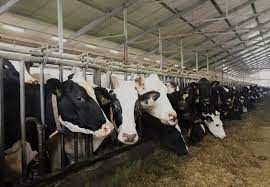
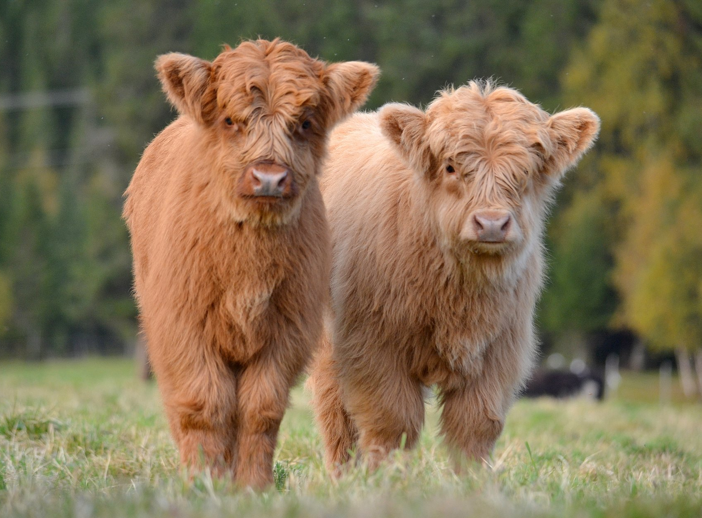
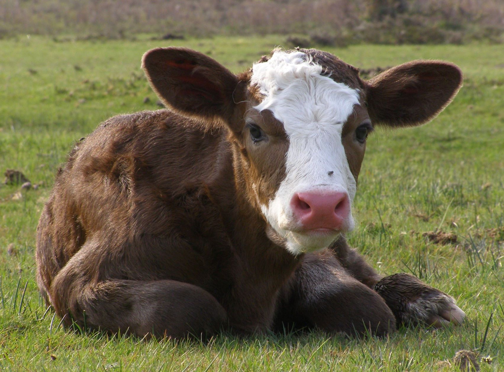

Многие люди считают, что коровам не приносится вред, если их держать только для производства молока, "им даже приятно, когда их доят".
В современном мире процент городского населения растет с каждым днем и становится все меньше и меньше места для традиционных ферм, где коровы пасутся на лугу, а вечером добрая женщина доит на своем дворе вернувшуюся с пастбища коровушку.
В реальности молоко производится на фермах промышленного масштаба, где коровы никогда не покидают установленного для каждой тесного стойла, и доят их бездушные машины.

Но даже независимо от того, где корова содержится - на промышленной ферме или в "деревне у бабушки", для того, чтобы она давала молоко, она должна ежегодно рожать телёнка. Бычок давать молока не может и его участь неизбежна.
На фермах животных принуждают телиться без перерывов. Как и люди, коровы вынашивают плод 9 месяцев. В течение беременности коров не перестают доить.
В естественной обстановке средний возраст коровы был бы 25 лет. В современных условиях их отправляют на бойню после 3-4 лет "работы". Современная молочная корова под воздействием интенсивных технологий производит в 10 раз больше молока, чем в естественных условиях. Организм коров подвергается изменениям и находится под постоянным стрессом, что приводит к возникновению различных заболеваний животных, таких как: мастит, коровья лейкемия (т.н. лейкоз крупного рогатого скота), коровий иммунодефицит (т.н. иммунодефицит крупного рогатого скота), болезнь Кронина.
Для борьбы с болезнями коровам даются многочисленные лекарства и антибиотики. Некоторые из заболеваний животных имеют долгий инкубационных период и часто проходят без видимых симптомов, в то время как корову продолжают доить и отправлять молоко в производственную сеть. Если корова питается травой, то она не сможет давать такие гигантские количества молока. Коровам скармливается высококалорийный корм, в состав которого добавляют мясокостную муку и отходы рыбной промышленности, что является неестественным для травоядных животных и вызывает различные нарушения обмена веществ. Для увеличения производства молока коровам вкалывают гормоны роста (Bovine Growth Hormone), созданные синтетическим путем. Кроме вредного влияния на организм самой коровы, гормон также вызывает серьезные дефекты в организме телят.
Телята, которые рождаются у молочных коров, отнимаются от матери сразу после рождения. Половина родившихся телят, как правило, телочки и их выращивают на замену быстро приходящих в негодность матерей. Бычки же заканчивают свой век гораздо быстрее: часть из них выращивают до взрослого состояния и отправляют на говядину, а часть уже в младенческом возрасте забивают на телятину.


Производство телятины является побочным продуктом молочной промышленности. Этих телят держат до 16 недель в тесных деревянных стойлах, где они не могут ни развернуться, ни вытянуть ноги, ни даже удобно лечь. Их кормят заменителем молока с отсутствием железа и клетчатки с тем, чтобы у них развивалась анемия. Именно благодаря этой анемии (атрофированию мышц) получают "бледную телятину" - мясо приобретает тот нежный светлый цвет и высокую стоимость. Некоторых бычков забивают в возрасте нескольких дней с тем, чтобы сократить расходы на их содержание.
По материалам Farm Sanctuary (Приюта для спасенных сельскохозяйственных животных) и подборок из материалов PETA